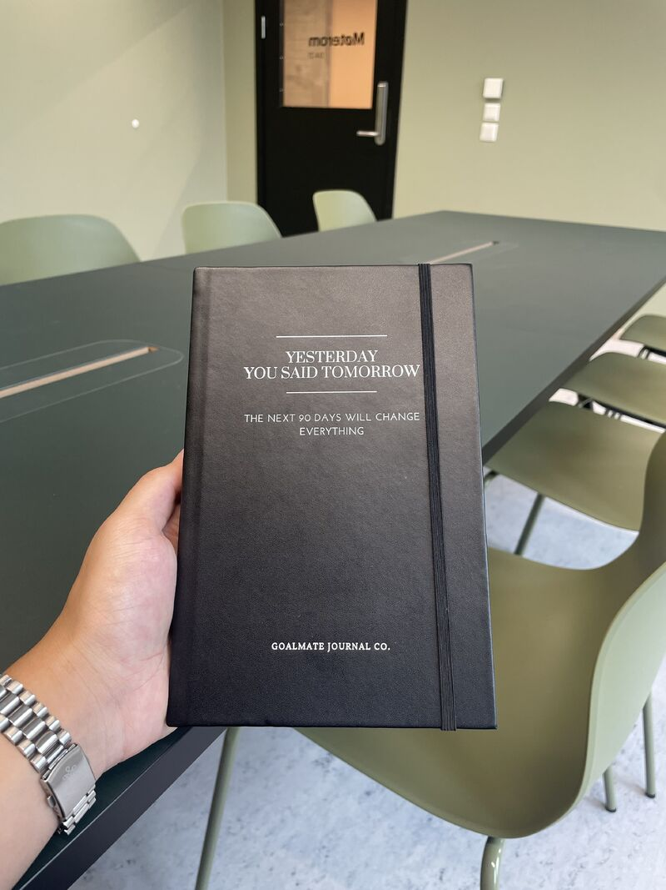

Bachelor's in Cyber Security and Programming, Cyber Developer Committed to Making a Positive Impact on the World
In my free time, I enjoy a variety of activities that help me grow both personally and professionally.
I love to fish, which gives me the opportunity to relax and reflect, teaching me patience and adaptability.
I am passionate about attending IT-related events. These events keep me updated with the latest technologies and provide a platform to meet like-minded people. Networking is something I value highly, as I believe collaboration and knowledge-sharing lead to personal growth and new opportunities.
Meeting new people and building networks is important to me. It's through these interactions that I gain new insights and get inspired to push myself further. I always strive to learn something new and to develop my skills, whether through work, study, or conversations with others.
To help students and others build strong, consistent habits, I created a 90-day journal. This journal is designed to help people stay disciplined and focused on their personal growth through daily routines, goal setting, and progress tracking.
If you're interested in learning more or want to get a copy, feel free to contact me.